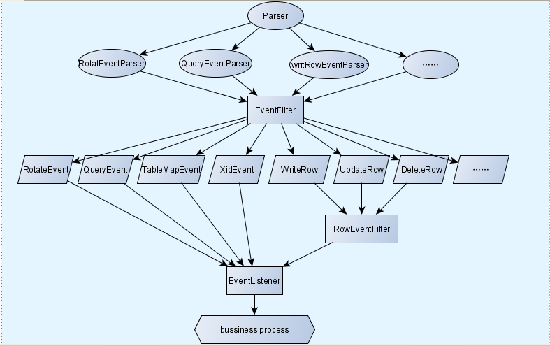

简介
本文主要介绍如何使用Storm处理Binlog日志，满足实时数据查询需求。
最初需要实现数据分析师对部分表实时查询的功能。 Binlog 用作同步实时数据到 HBase 中，用于 Hive 外表对这张实时表进行查询分析。技术层面只涉及到单表同步，只需要解析Binlog事件转化为 HBase 的 Put/Delete 操作即可。
随发展，业务方提出了实时性很高的数据需求，这些慢SQL使用MySQL查询数分钟，无法满足实时性的要求。
所以我们通过 对 Binlog 日志进行实时分析，计算数据指标落地到 HBase ，给业务方提供实时查询服务。 技术上需要处理复杂的SQL的实时多表关联、结果集存储设计以及快速查询。
Binlog
格式
Binlog是记录MySQL中所有修改操作的二进制文件。
Binlog有三种格式：
| 模式 | 说明 |
|---|---|
| Row | 记录成每一行被修改的数据 |
| Statement | 记录每一条修改数据的SQL |
| Mixed | 优先使用Statement模式存储 |
对于上文中所有修改操作，在Row格式和Statement格式下记录有不同。
- Row 格式下不会记录潜在的更新操作(如: 影响0行的delete操作、没有改变数据的update操作)。
- Statement 格式下会记录潜在的更新操作。
- Select 操作所有模式都不会记录。
Statement格式记录的是SQL，Row格式记录的是数据。因此我们选用Row格式的Binlog日志来同步数据。
拉取
Binlog文件存储在MySQL服务器上，程序可以通过连接MySQL获取Binlog数据流的方式来拉取Binlog。
Binlog权限
首先拉取Binlog需要两个权限：
|
|
Binlog偏移量
开通有这两个权限的账号后即可获取 Binlog ，用 MySQL 客户端可查看如下信息:
|
|
其中 Log_name/File 是 Binlog 文件的名称，Position 是当前文件的偏移量。
每个Binlog文件的偏移量都是4开始的
获取Binlog数据流
获取 Binlog 数据流需要使用MySQL的复制协议(Replication Protocol)
连接MySQL后，向服务器发送COM_BINLOG_DUMP包即可获取Binlog数据流，包格式如下:
| 长度 | 字段 | 说明 |
|---|---|---|
| 1 | [12] COM_BINLOG_DUMP | 包头，值固定为12 |
| 4 | binlog-pos | 开始的binlog文件偏移量 |
| 2 | flags | 标志 |
| 4 | server-id | 服务器id，保证唯一。 |
| string[EOF] | binlog-filename | binlog文件名称 |
当多个进程同时向一个MySQL拉取Binlog时，server-id 不能为同一个，否则先拉取的进程会受影响。
如果是同一个
server-id，后拉取的进程启动后，先拉取的进程服务端会返回错误代码2050，从而无法正常获取Binlog数据流。2050 = SERVER_QUERY_WAS_SLOW + SERVER_STATUS_AUTOCOMMIT
数据包的Java数据结构如下:
|
|
通过show binary logs;查看选择开始的Binlog文件和偏移量，在客户端中无法查看到Binlog文件的更新时间，特定时间的Binlog需要通过MySQL服务端获取。
COM_BINLOG_DUMP发送成功后，就可以读取返回的Binlog流了。
解析
Binlog返回的二进制流，需要解析。
根据 Binlog Event 中的包定义，读取二进制流进行解析。
解析Binlog的常用组件有alibaba/canal 和whitesock/open-replicator。
本文使用open-replicator来处理。
流处理
Binlog 数据源
用open-replicator的代码作为Spout的解析Binlog的方法。
open-replicator是一个Java编写的高性能MySQL Binlog解析器。它封装了上一节中描述的Binlog协议，实时拉取解析Binlog，以回调的方式发送Binlog事件给应用。
结合Storm框架，我们只使用open-replicator中解析Binlog为Event的功能，并且只处理Row格式的Binlog。Event的由Bolt处理后续逻辑。
open-replicator对Binlog Event解析结构图如下：

Binlog Event Parser将Binlog会被解析成各种事件，这些事件分为4类。
Binlog管理事件
- START_EVENT_V3
- FORMAT_DESCRIPTION_EVENT
- STOP_EVENT
- ROTATE_EVENT
- SLAVE_EVENT
- INCIDENT_EVENT
- HEARTBEAT_EVENT
Statement格式同步事件
Row格式同步事件
- TABLE_MAP_EVENT
- DELETE_ROWS_EVENTv0
- UPDATE_ROWS_EVENTv0
- WRITE_ROWS_EVENTv0
- DELETE_ROWS_EVENTv1
- UPDATE_ROWS_EVENTv1
- WRITE_ROWS_EVENTv1
- DELETE_ROWS_EVENTv2
- UPDATE_ROWS_EVENTv2
- WRITE_ROWS_EVENTv2
加载文件同步事件
- LOAD_EVENT
- CREATE_FILE_EVENT
- APPEND_BLOCK_EVENT
- EXEC_LOAD_EVENT
- DELETE_FILE_EVENT
- NEW_LOAD_EVENT
- BEGIN_LOAD_QUERY_EVENT
- EXECUTE_LOAD_QUERY_EVENT
事件对应的编号在MySQL源码的log_event.h中定义。
以上的事件中，处理时我们只关心与修改数据相关的事件。
| 事件 | 编号 | 描述 |
|---|---|---|
| TABLE_MAP_EVENT | 19 | 映射当前操作的表信息。 |
| WRITE_ROWS_EVENT | 23 | 插入事件 |
| WRITE_ROWS_EVENT_V2 | 30 | 插入事件 |
| UPDATE_ROWS_EVENT | 24 | 更新事件 |
| UPDATE_ROWS_EVENT_V2 | 31 | 更新事件 |
| DELETE_ROWS_EVENT | 25 | 删除事件 |
| DELETE_ROWS_EVENT_V2 | 32 | 删除事件 |
| ROTATE_EVENT | 4 | 翻页事件，翻到下一个Binlog文件。 |
注意
在MySQL5.6版本后，增改删都使用V2事件。
解析后的增删改事件封装为一个Event对象，Event对象包括了一个Binlog事件包中所有的数据，包括Row格式下的修改的行数据。将封装的Event对象发送到下游由业务Bolt进一步处理。
Spout实现
首先确定Spout需要输出的数据，如下：
| 字段 | 描述 |
|---|---|
| DataBase | 数据库 |
| Table | 表 |
| Event | 事件 |
我们的想法是将open-replicator中读取MySQL Binlog流解析为Event的代码抽取出来，并且去掉回调的模块，放在Spout的nextTuple()中。
这里直接使用open-replicator中的BinlogReplicationEntrance类实例化具体的数据库对象，通过这个对象获取Binlog流。获取Binlog流后，在nextTuple()方法中，每次读取一个包并发送解析后的数据库、表和事件信息。
包的结构
TABLE_MAP_EVENT
TABLE_MAP_EVENT封装的Event对象结构如下。
|
|
其中需要的字段是tableId，databaseName和tableName。
tableId
增删改事件的数据结构中只有通过tableId来确定操作的表，要得到数据库、表和事件的信息需要保留tableId的对应信息。处理此类事件，将tableId和Event对象保存在一个哈希表中。
注意
同一个表在不同Binlog文件中的tableId是不一样的，处理新的Binlog文件时，老的对应关系要清空。
WRITE_ROWS_EVENT
WRITE_ROWS_EVENT封装的Event对象结构如下。
|
|
WRITE_ROWS_EVENT 和 WRITE_ROWS_EVENT_V2两个事件的区别在与有无extra字段。
我们需要用到tableId和rows字段。
tableId
我们需要通过tableId字段，在解析TABLE_MAP_EVENT事件的哈希表中获取表名和数据库名字段。
rows
rows包含这次插入事件的所有行，Row对象的数据结构如下：
|
|
一个Row对象就是一行添加的数据，一次插入操作可能会添加多行数据，因此这里用List<Row>来存储。
DELETE_ROWS_EVENT
DELETE_ROWS_EVENT封装的Event对象与WRITE_ROWS_EVENT相同，V2版本同样只多了extra字段。
|
|
rows
rows包含这次删除事件影响的所有行。
一个Row对象就是一行删除的数据，一次删除操作可能会影响多行数据。
UPDATE_ROWS_EVENT
UPDATE_ROWS_EVENT封装的Event对象数据结构如下：
|
|
跟以上两种事件的区别在与rows字段，类型为List<Pair<Row>>。
Pair的数据结构如下:
|
|
一个Pair<Row>对象中有两行数据，第一个为修改之前的整行数据，第二个为修改之后的整行数据。